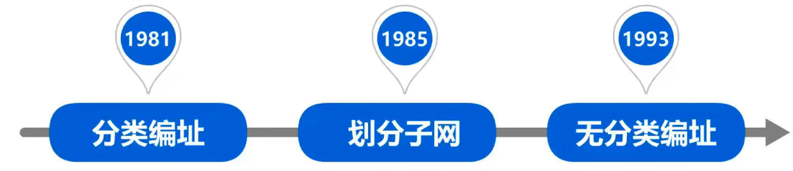
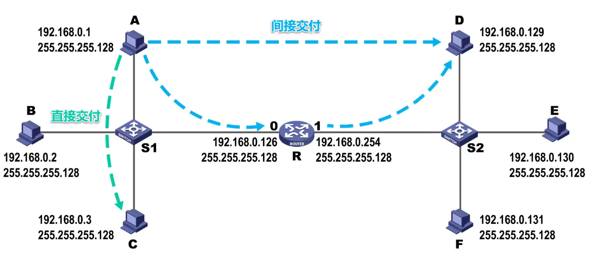
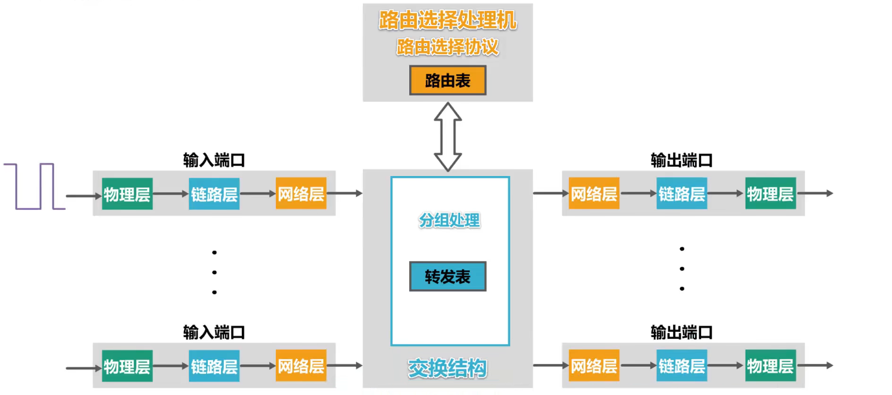

网络层
网络层的主要任务是实现网络互连，进而实现数据报在各网络之间的传输。因特网是目前全世界用户数量最多的互联网，它使用TCP/IP协议栈。由于TCP/IP协议栈的网络层使用网际协议IP，它是整个协议栈的核心协议，因此在TCP/IP协议栈中网络层常称为网际层。
网络层
网络层概述
网络层的主要任务是实现网络互连，进而实现数据报在各网络之间的传输。
要实现网络层的任务，需要解决以下主要问题：
- 网络层向运输层提供怎样的服务（“可靠传输”还是“不可靠传输”）
- 网络层寻址问题
- 路由选择问题
因特网是目前全世界用户数量最多的互联网，它使用TCP/IP协议栈。由于TCP/IP协议栈的网络层使用网际协议IP，它是整个协议栈的核心协议，因此在TCP/IP协议栈中网络层常称为网际层。
网络层提供的两种服务
面向连接的虚电路服务
- 可靠通信由网络来保证
- 必须建立网络层的连接—虚电路VC
- 通信双方沿着已建立的虚电路发送分组
- 目的主机的地址仅在连接建立阶段使用，之后每个分组的首部只需携带一条虚电路的编号（构成虚电路的每一段链路都有一个虚电路编号）。
- 这种通信方式如果在使用可靠传输的网络协议，就可使所发送的分组最终正确到达接收方（无差错按序到达、不丢失、不重复）
- 通信借宿后需要释放之前所建立的虚电路。
无连接的数据报服务
- 可靠通信应当由用户主机保证
- 不需要建立网络层连接
- 每个分组可走不同的路径
- 每个分组的首部必须携带目的主机的完整地址
- 这种通信方式所传送分组可能误码、丢失、重复和失序
- 由于网络本身不提供端到端的可靠传输服务，这就使网络中的路由器可以做得比较简单，而且价格低廉（与电信网的交换机相比较）
- 因特网采用了这种设计思路，将复杂的网络处理功能置于因特网的边缘（用户主机和其内部的运输层），而将相对简单的尽最大努力的分组交付功能至于因特网核心。
IPv4地址
概述
IPv4地址就是给因特网上的每一台主机（或路由器）的每一个接口分配一个再全世界范围内是唯一的32比特的标识符。IPv4地址的编址方法激励了如下三个历史阶段：

32比特的IPv4地址不方便阅读、记录以及输入等，因此IPv4地址采用点分十进制表示方法以方便用户使用：
8位无符号二进制整数转十进制数
十进制正整数转8位无符号二进制数
分类编址的IPv4地址
A类地址
B类地址
C类地址
练习
划分子网的IPv4地址
32比特的子网掩码可以表明分类IP地址的主机号部分被借用了几个比特作为子网号
- 子网掩码使用连续的比特1来对应网络号和子网号
- 子网掩码使用连续的比特0来对应主机号
- 将划分子网的IPv4地址与其相应的子网掩码进行逻辑与运算就可得到IPv4地址所在子网的网络地址
默认的子网掩码是指在未划分子网的情况下使用的子网掩码
无分类编址的IPv4地址
概述
划分子网在一定程度上环节了因特网在发展中遇到的困难，但是数量巨大的C类网因为其地址空间太小并没有得到充分使用，而因特网的IP地址仍在加速消耗，整个IPv4地址空间面临全部耗尽的威胁。
1993年，IETF发布了无分类域间路由选择CIDR的RFC文档：RFC1517~1519和1520。
- CIDR消除了传统的A类、B类和C类地址，以及划分子网的概念；
- CIDR可以更加有效地分配IPv4的地址空间，并且可以在新的IPv6使用之前允许因特网的规模继续增长。
CIDR使用“斜线记法”，或称CIDR记法。即在IPv4地址后面加上斜线“/”,在斜线后面写上网络前缀所占的比特数量。实际上是将网络前缀都相同的连续的IP地址组成一个“CIDR地址快”。我们只要知道CIDR地址快中的任何一个地址，就可以知道该地址的全部细节：地址块的最小地址、地址快的最大地址、地址块中的地址数量、地址块聚合某类网络（A类、B类或C类）的数量、地址掩码（也可称为子网掩码）
路由聚合
网络前缀越长，地址块越小，路由越具体；若路由器查表转发分组时发现多条路由可选，则选择网络前缀最长的那条，这称为最长前缀匹配，因为这样的路由更具体。
IPv4地址应用规划
定长的子网掩码FLSM
使用一个子网掩码来划分子网；每个子网所分配的IP地址数量相同，造成IP地址的浪费。

变长的子网掩码VLSM
使用不同的子网掩码来划分子网，每个子网所分配的IP地址数量可以不同，尽可能减少对IP地址的浪费。
IP数据报到发送和转发过程
IP数据报的发送和转发过程包含以下两部分：主机发送IP数据报、路由转发IP数据报。

同一个网络中的主机之间可以直接通信，属于直接交付；不同网络中的主机之间的通信，需要通过路由器来中转，属于间接交付。
源主机如何知道目的主机是否与自己在同一个网络中？
假设主机C给主机F发送IP数据报，主机C将自己的IP地址和子网掩码相与，就可以得到主机C所在网络的网络地址。主机C将主机F的IP地址与自己的子网掩码相与，就可得到目的网络地址。该地址与主机C的网络地址不相等，因此主机C就知道了主机F与自己不在同一个网络。它们之间的通信属于间接交付。
主机C需要把IP数据报传输给路由器，由路由器将IP数据报转发给主机F。
主机C如何知道路由器R的存在？
用户为了让本网络中的主机能和其他网络中的主机进行通信，就必须给其指定本网络中的一个路由器，由该路由器帮忙进行转发。所指定的路由器，也被称为默认网关。我们可以将路由器接口0和1的IP地址，指定给该接口所直连网络中的各个主机作为默认网关。
当本网络中的主机要和其他网络中的主机进行通信时，会将IP数据报传输给默认网关，由默认网关帮主机将IP数据报转发出去。
路由器收到IP数据报后如何转发？
假设主机A要给主机D发送IP数据报，主机A会将该IP数据报传输给自己的默认网关。
- 检查IP数据报首部是否出错：若出错，则直接丢弃该IP数据报并通告源主机；若没有出错，则进行转发。
- 根据IP数据报的目的地址在路由表中查找匹配的条目：若找到匹配得到条目，则转发给条目中指示的下一跳；若找不到，则丢弃该IP数据报并通告源主机。
当我们给路由器的接口配置IP地址和子网掩码时，路由器就知道了自己的该接口与哪个网络是直连的。
路由器根据IP数据报的目的地址，在自己的路由表中查找匹配的路由条目，逐条检查路由条目。将目的地址与路由条目中的地址掩码相与得到目的网络地址。
假设主机A给本网络上的各设备发送了一个广播IP数据报。该网络中的各设备都会受到该广播IP数据报。但是路由器收到后并不会转发该数据报，路由器是隔离广播域的。
练习
静态路由配置
静态路由配置是指用户或网络管理员使用路由器的相关命令给路由器人工配置路由表。这种人工配置方式简单、开销小。但不能及时适应网络状态（流量、拓扑等）的变化。一般只在小规模网络中采用。
使用静态路由配置可能出现以下导致产生路由环路的错误：配置错误、聚合了不存在的网络、网络故障。
静态路由配置
默认路由
由于因特网中包含了众多的网络，如果给R1添加针对这些网络的每一条路由条目，则会给人工配置带来巨大的工作量，并且使R1的路由表变得非常大，降低了查表转发速度。对于具有相同下一跳的不同目的网络的路由条目，可以用一条默认路由条目来替代。对于本例，配置了默认路由，可以删除第三条路由。
特定主机路由
有时候，我们可以给路由器添加针对某个主机的特定主机路由条目。一般用于网络管理人员对网络的管理和测试。特定主机路由的目的网络前缀最长，路由最具体；默认路由的目的网络网络前缀最短，路由最模糊。当路由器查表转发IP数据报时，若有多条路由条目可选，则使用最长前缀匹配。
路由环路问题
静态路由配置错误
假设将下一跳配置错误，错误地指向了R3的接口0。
为了防止IP数据报在路由环路中永久兜圈，在IP数据报首部设有生存时间TTL字段。IP数据包进入路由器后，TTL字段的值减1.若TTL的值不等0，则路由器转发，否则丢弃。
聚合不存在的网络
当R2要转发IP数据报到不存在的网络时，进行查表转发。但对于这个不存在的网络，路由器R2应该不予转发，却错把它转发给了路由器R1。路由器R1查表转发，只能走默认路由。这样就产生了路由环路。
解决：添加针对所聚合的、不存在的网络的黑洞路由。IP数据报进入后有去无回，即路由器丢了该IP数据报，当R2要转发IP数据报到不存在的网络时，进行查表转发，根据最长前缀匹配原则，将会选择该不存在网络的黑洞路由。
网络故障
添加针对该直连网络的黑洞路由。这样可以解决网络故障导致的路由环路问题。假设一段时间后，之前的故障消失了，则R1又自动地得出了其接口0的直连网络的路由条目，并将之前人工配置的针对该直连网络的黑洞路由条目设置为失效状态。
假设R1再次检测到接口0所直连的网络出现了故障而不可达，则会自动在其路由表中删除该直连网络的路由条目，并将之前人工配置的针对该直连网络的黑洞路由条目设置为生效状态。
路由选择协议
概述
路由选择分为：静态路由选择和动态路由选择。
静态路由选择：由人工配置的网络路由、默认路由、特定主机路由、黑洞路由等都属于静态路由。这种人工配置方式简单、开销小，但不能及时适应网络状态（流量、拓扑等）的变化。一般只在小规模网络中采用。
动态路由选择：路由器通过路由选择协议自动获取路由信息。比较复杂、开销比较大，能较好地适应网络状态的变化。适用于大规模网络。
路由选择协议的主要特点
因特网所采用的路由选择协议的主要特点：自适应、分布式、分层次。
自适应：动态路由选择，能较好地适应网络状态的变化。
分布式：路由器之间交换路由信息。
分层式：将整个因特网划分为许多较小的自治系统AS。
因特网采用分层次的路由选择协议
在一个自治系统内部使用的具体的内部网关协议与因特网中其他自治系统中选用何种内部网关协议无关。
常见的路由选择协议
路由器的基本结构
路由器是一种具有多个输入端口和输出端口的专用计算机，其任务是转发分组。整个路由器结构可划分为两大部分：路由选择部分和分组转发部分。
路由选择部分的核心构件是路由选择处理机。它的任务是根据所使用的路由选择协议周期性地与其他路由器进行路由信息的交互来更新路由表。分组转发部分由三部分构成：交换结构、一组输入端口和一组输出端口。

信号从某个输入端口进入路由器，物理层将信号转换成比特流，送交数据链路层处理。
数据链路层从比特流中识别出帧，去掉帧头和帧尾后，送交网络层处理。
如果送交网络层的分组是普通待转发的数据分组，则根据分组首部中的目的地址进行查表转发，若找不到匹配的转发条目，则丢弃该分组；否则，按照匹配条目中所指示的端口进行转发。
网络层更新数据分组首部中某些字段的值，例如将会数据分组的生存时间减1。
然后送交数据链路层进行封装成帧。
送交物理层处理，物理层将帧看做比特流，将其变换成相应的电信号进行发送。
如果送交网络层的分组是路由器之间交换路由信息的路由报文，则把这种分组送交路由选择处理机。路由选择处理机根据分组的内容来更新自己的路由表。路由选择处理机除了处理收到路由报文外，还会周期性地给其他路由器发送自己所知道的路由信息。
路由表一般仅包含从目的网络到下一跳的映射
路由表需要对网络拓扑变化的计算最优化
转发表是从路由表得出的
转发表的结构应当使查找过程最优化
路由器的各端口还应具有输入缓冲区和输出缓冲区。输入缓存区用来暂存新进入路由器但还来不及处理的分组。输出缓冲区用来暂存已经处理完毕但还来不及发送的分组。路由器的端口一般都具有输入和输出的功能。
RIP的基本工作原理
概念
路由信息协议RIP是内部网关协议IGP中最先得到广泛使用的协议之一，其相关标准文档为RFC1058.
RIP要求自治系统AS内的每一个路由器都要维护从它自己到AS内其他每一个网络的距离记录。这是一组距离，称为“距离向量D-V”。
RIP使用跳数作为度量来衡量到达目的网络的距离。
- 路由器到直连网络的距离定义为1。
- 路由器到非直连网络的网络的距离定义为所经过的路由器加1.
- 允许一条路径最多只能包含15个路由器。距离等于16时相当于不可达。因此RIP只适用于小型互联网。
RIP认为好的路由就是“距离短”的路由，也就是所通过路由器数量最少的路由。
当到达同一目的网络有多条“距离相等”的路由时，可以进行等价负载均衡。
RIP包含以下三个要点：
- 和谁交换信息 仅和相邻路由器交换信息
- 交换什么信息 自己的路由表
- 何时交换信息 周期性交换（如每30秒）
RIP的基本工作过程
- 路由器刚开始工作时，只知道自己到直连网络的距离为1.
- 每个路由器仅和相邻路由器周期性地交换更新路由信息。
- 若干次交换和更新后，每个路由器都知道到达本AS内各网络的最短距离和下一跳地址，称为收敛。
RIP的路由条目更新规则
练习
RIP存在“坏消息传播得慢”的问题
“坏消息传播得慢”又称为路由环路或距离无穷计数问题，这是距离向量算法的一个固有问题。可以采取多种措施减少出现该问题的概率或减小该问题带来的危害。
限制最大路径为15（16表示不可达）
当路由表发生变化时就立即发送更新报文（即“触发更新”），而不仅是周期性发送
让路由器记录收到某特定路由信息的接口，而不让同一路由信息再通过此接口向反方向传送（即“水平分割”）
假设R1到达其直连网络N1的链路出现了故障，当R1检测出该故障后，会将到达N1的路由条目中的距离修改为16，表示N1不可达，并等待RIP更新周期到时后发送该路由信息给R2.而此时R2的路由表中关于N1的路由条目仍然是先前通过RIP协议获取到的，也就是到达N1的距离为2，下一跳通过N1转发。假设R2的RIP更新周期先到时，而R1路由信息后到达R2.

当R1收到R2的这条路由信息后，会被该谣言误导，认为可以通过R2到达N1，距离为3.并在自己的RIP更新周期到时后，将这条路由信息发送给R2.当R2收到R1的这条路由信息后，被该谣言误导，认为可以通过R1到达N1，距离改为4.并在自己的RIP更新周期到时后，将这条路由信息发送给R1……
最后，只有当R1和R2的路由表中，到达N1的路由条目中的距离都增加到16后，R1和R2才都知道N1不可达。在该过程中，R1和R2之间会出现路由环路，时间长达数分钟
练习
OSPF的基本工作原理
概念
- 开放最短路径优先OSPF，是为克服RIP的缺点在1989年开发出来的。
- OSPF是基于链路状态的，而不像RIP那样是基于距离向量的。
- OSPF采用SPF算法计算路由，从算法上保证了不会产生路由环路。
- OSPF不限制网络规模，更新效率高，收敛速度快。
- 链路状态是指本路由器都和哪些路由相邻，以及相应链路的“代价”（费用、距离、时延、宽带等等）。
- OSPF相邻路由器之间通过交互问候（Hello）分组，建立和维护邻居关系。
Hello分组封装在IP数据报中，发往组播地址224.0.0.5；
发送周期为10秒；
40秒未收到来自邻居路由器的Hello分组，则认为该邻居路由器不可达。
- 使用OSPF每个路由器都会产生链路状态通告LSA。LSA包含以下内容：直连网络的链路状态信息、邻居路由器的链路状态信息。
- LSA被封装在链路状态更新分组LSU中，采用洪泛法发送。
- 使用OSPF的每个路由器都有一个链路状态数据库LSDB，用于存储LSA.
- 通过各路由器洪泛发送封装有自己LSA的LSU分组，各路由器的LSDB最终达到一致。
- 使用OSPF的各路由器基于LSDB进行最短路径优先SPF计算，构建出各自到达其他各路由器的最短路径，即构建各自的路由表。
- OSPF在多点接入网络中路由器邻居关系的建立
为了减少所发送分组的数量，OSPF采用选举指定路由器DR和备用的指定路由器BDR的方法，所有的非DR/BDR只与DR/BDR建立邻居关系，非DR/BDR之间通过DR/BDR交换信息（若DR出现问题，则由BDR顶替DR）。
DR与BDR是通过各路由器之间交换一些选举参数，路由器优先级、路由器ID、接口IP地址等，根据选举规则选出DR和BDR，与交换机生成树协议选举根交换机类似。
- 为了使OSPF能够用于规模很大的网络，OSPF把一个自治系统再划分为若干个更小的范围，叫做区域。
每个区域都有一个32比特的区域标识符，例如主干区域的标识符必须为0，也可表示成点分十进制形式的0.0.0.0。主干区域用于连通其他区域，其他区域的标识符不能为0且互不相同。每个区域的规模不应太大，一般所包含的路由器不应超过200个。
划分区域的好处：把利用洪泛法交换链路状态信息的范围，局限于每一个区域而不是整个自治系统，这样就减少了整个网络上的通信量。采用分层次划分区域的方法，虽然使交换信息种类增多了，同时也使OSPF协议更加复杂了，但这样却能使每一个区域内部交换路由信息的通信量大大减小，因而使OSPF协议能够用于规模很大的自治系统中。
如果路由器所有接口都在同一个区域内，则该路由器称为区域内路由器。LSA（链路状态通告）
OSPF五种分组类型
- 问候分组：用来发现和维护邻居路由器的可达性。
- 数据库描述分组：向邻居路由器给出自己的链路状态数据库中的所有链路状态项目摘要信息
- 链路状态请求分组：向邻居路由器请求发送某些链路状态项目得到详细信息。
- 链路状态更新分组：路由器使用这种分组将其链路状态进行洪泛发送，即用洪泛法对全网更新链路状态。
- 链路状态确认分组：这是对链路状态更新分组的确认分钟。
OSPF基本工作过程

相邻路由器之间周期性发送问候分组，以便建立和维护邻居关系。
建立邻居关系后，给邻居路由器发送数据库描述分组（将自己的链路状态数据库中的所有链路状态项目的摘要信息发送给邻居路由器）。例如，R1收到R2的数据库描述分组后，发现自己缺少其中的某些链路状态项目，于是就给R2发送链路状态请求分组。R2收到后，将R1所缺少的链路状态项目的详细信息，封装在链路状态更新分组中发送给R1.R1收到后，将这些所缺少的链路状态项目的详细信息，添加到自己的链路状态数据库中，并给R2发送链路状态确认分组（R2也可以向R1请求自己所缺少的链路状态项目的详细信息）。

每30分钟或链路状态发送变化时，路由器都会发送链路状态更新分组。收到该分组的其他路由器将洪泛转发该分组，并给该路由器发回链路状态确认分组。
BGP的基本工作原理
概念
- 因特网采用分层次的路由选择协议

- 内部网关协议IGP（例如路由信息协议RIP或开房最短路径优先OSPF）
设法使分组在一个自治系统内尽可能有效地从源网络传输到目的网络；无需考虑自治系统外部其他方面的策略。
- 外部网关协议EGP（例如边界网关协议BGP）
不同自治系统内，度量路由的“代价”（距离，宽带，费用等）可能不同。因此，对于自治系统之间的路由选择，使用“代价”作为度量来寻找最佳路由时不行的。
BGP只能是力求寻找一条能到达目的网络且比较好的路由，而并非要寻找一条最佳路由。
- 在配置BGP时，每个自治系统的管理员要选择至少一个路由器作为该自治系统的“BGP发言人”
- 不同自治系统的BGP发言人要交换路由信息，首先必须建立TCP连接，端口号为179
在此TCP连接上交换BGP报文以建立BGP会话；
利用BGP会话交换路由信息（例如，增加新的路由，或撤销过时的路由，以及报告出错的情况等）；
使用TCP连接交换路由信息的两个BGP发言人，彼此称为对方的邻站或对等站。
- BGP发言人处理运行BGP外，还必须运行自己所在自治系统所使用的内部网关协议IGP，例如OSPF或RIP。
- BGP发言人交换网络可达性的信息（要到达某个网络所要经过的一系列自治系统）
- 当BGP发言人互相交换了网络可达性的信息后，各BGP发言人就根据所采用的策略从收到的路由信息中找出到达各自治系统的较好的路由。也就是构造出树形结构、不存在回路的自治系统连通图。
- BGP适用于多级结构的因特网
BGP-4的四种报文
OPEN（打开）报文：用来与相邻的另一个BGP发言人建立关系，使通信初始化。
UPDATE（更新）报文：用来通告某一路由的信息，以及列出要撤销的多条路由。
KEEPALIVE（保活）报文：用来周期性地正式邻站的连通性。
NOTIFICATION（通知）报文：用来发送检测到的差错。
在BGP协议刚刚运行时，BGP的邻站交换整个BGP路由表。但以后只需要在发生变化时更新有变化的部分，这样做对节省网络宽带和减少路由器的处理开销都有好处。
练习
IPv4数据报的首部格式
概念
- 版本
占4比特，表示IP协议的版本。通信双方使用的IP协议的版本必须一致。目前广泛使用的IP协议版本号为4（即IPv4）.
- 首部长度
占4比特，表示IP数据报首部的长度。该字段的取值以4字节为单位。最小十进制取值为5，表示IP数据报首部只有20字节固定部分；最大十进制取值为15，表示IP数据报首部包含20字节固定部分和最大40字节可变部分。
- 可选字段
长度从1字节到40个字节不等。用来支持排错、测量及安全等措施。可选字段增加了IP数据报的功能，但这同时也使得IP数据报的首部长度成为可变的。这就增加了每一个路由器处理IP数据报的开销。实际上可选字段很少被使用。
- 填充字段
确保首部长度为4字节的整数倍，使用全0进行填充。
- 区分服务
占8比特，用来获得更好的服务。该字段在旧标准中叫做服务类型，但实际上一直没有被使用过。1998年，因特网工程任务组IETF把这个字段改名为区分服务。利用该字段的不同数值可提供不同等级的服务质量。只有在使用区分服务时，该字段才起作用。一般情况下都不使用该字段。
- 总长度
占16比特，表示IP数据报的总长度（首部+数据载荷）。最大取值为十进制的65535，以字节为单位。
总长度与首部长度的联系：
- 标识
占16比特，属于同一个数据报的各分片数据报应该具有相同的标识。IP软件维持一个计数器，每产生一个数据报，计数器值加1，并将此值赋给标识字段。
- 标志
占3比特，DF位：1标识不允许分片；0标识允许分片。MF位：1表示“后面还有分片”；0表示“这是最后一个分片”。保留位：必须为0。
- 片偏移
占13比特，指出分片数据报的数据载荷部分偏移其在原数据报的位置还有多少单位。片偏移以8个字节为单位。
标识、标志、片偏移这三个字段共同用于IP数据报分片
- 生存时间TTL
占8比特，最初以秒为单位，最大生存周期为255秒；路由器转发IP数据报时，将IP数据报首部中的该字段的值减去IP数据报在本路由器上所耗费的时间，若不为0就转发，否则丢弃。
现在以“跳数”为单位，路由器转发IP数据报时，将IP数据报首部中的该字段的值减1，若不为0就转发，否则就丢弃。
作用：防止IP数据报将在路由环路中兜圈。IP数据报每经过一个路由器，其生存时间的值被减1，直到TTL的值减少到0时被路由器丢弃。
- 协议
占8比特，指明IPv4数据报的数据部分是何种协议数据单元。常用的一些协议和相应的协议字段如下：
- 首部检验和
占16比特，用来检测首部在传输过程是否出现差错。比CRC检验码简单，称为因特网检验和。
IP数据报每经过一个路由器，路由器都要重新计算首部检验和，因为某些字段（生存时间、标志、片偏移等）的取值可能发生变化。
由于IP层本身并不提供可靠传输的服务，并且计算首部检验和是一项耗时的操作，因此在IPv6中，路由器不再计算首部检验和，从而更快转发IP数据报。
- 源IP地址和目的IP地址
各占32比特，用来填写发送该IP数据报的源主机和接收该IP数据报的目的主机的IP地址。
IPv4数据报分片过程
练习
网际控制报文协议ICMP
概念
为了更有效地转发IP数据报和提高交付成功的机会，在网际层使用了网际控制报文协议ICMP。主机和路由器使用ICMP来发送差错报告报文和询问报文。ICMP报文被封装在IP数据报中发送。
五种ICMP差错报告报文
- 终点不可达
当路由器或主机不能交付数据报时，就向源点发送终点不可达报文。具体可根据ICMP的代码字段细分为目的网络不可达、目的主机不可达、目的协议不可达、目的端口不可达、目的网络未知、目的主机未知等种错误。
- 源点抑制
当路由器或主机由于拥塞而丢弃数据报时，就向源点发送抑制报文，使源点知道应该把数据报的发送速率放慢。
- 时间超过
路由器收到一个目的IP地址不是自己的IP数据报，会将其生存时间TTL字段的值减1.若结果不为0，则将该IP数据报转发出去；若结果为0，除丢弃该IP数据报外，还要向源点发送时间超过报文。
另外，当终点在预先规定的时间内不能收到一个数据报的全部数据报片时，就把已收到的数据报片都丢弃，也向源点发送时间超过报文。
- 参数问题
当路由器或器目的主机收到IP数据报后，根据其首部中的检验和字段发现首部在传输过程中出现了误码，就丢弃该数据报，并向源点发送参数问题报文。
- 改变路由（重定向）
路由器把改变路由报文发送给主机，让主机知道下次应将数据报发送给另外的路由器（可通过更好的路由）。
以下情况不应发送ICMP差错报文报告：
- 对ICMP的差错报告报文不再发送ICMP差错报告报文
- 对第一个分片的数据报片的所有后序数据报片都不发生ICMP差错报告报文
- 对具有多播地址的数据报都不发送ICMP差错报告报文
- 对具有特殊地址（如127.0.0.0或0.0.0.0）的数据报不发送ICMP差错报告报文
常用的两种ICMP询问报文
- 回送请求和回答
ICMP回送请求报文是由主机或路由器向一个特定的目的主机发出的询问。收到此报文的主机必须给源主机或路由器发送ICMP回送回答报文。这种询问报文用来测试目的站是否可达及了解其有关状态。
- 时间戳请求和回答
ICMP时间戳请求报文是请某个主机或路由器回答当前的日期和实践。在ICMP时间戳回答报文中有一个32位的字段，其中写入的整数代表从1900年1月1日期到当前时刻一共有多少秒。这种询问报文用来进行时钟同步和测量时间。
ICMP应用举例
- 分组网间探测PING
用来测试主机或路由器间的连通性；应用层直接使用网际层的ICMP（没有通过运输层的TCP或UDP）；使用ICMP回送请求和回答报文。
- 跟踪路由
用来测试IP数据报从源主机到达目的主机要经过哪些路由器。
H1如何知道到达H2要经过哪些路由器？
H1给H2发送ICMP回送请求报文，该报文被封装在IP数据报中。IP数据报首部中生存时间字段TTL的值被设置为1。该IP数据报到达R1后，其生存时间减1结果为0，R1丢弃该数据报并向发送该数据报的源主机H1，发送ICMP差错报告报文，类型为时间超过。这样H1就知道了到达H2的路径的第一个路由器。
虚拟专用网与网络地址转换NAT
虚拟专用网
利用公用的因特网作为本机构各专用网之间的通信载体，这样的专用网又称为虚拟专用网。由于IPv4地址的紧缺，一个机构能够申请到的IPv4地址数量往往远小于本机构所拥有的主机数量。因此，虚拟专用网中的各主机所分配的地址应该是本机构可自由分配的专用地址，而不是需要申请的、在因特网上使用的公用地址。
路由器R1收到该数据报后，发现其目的网络必须通过因特网才能到达，就将该内部IP数据报进行加密。然后重新添加数据报的首部，封装成为在因特网上发送的外部数据报。其首部中源地址字段值为路由器R1的全球地址，目的地之为路由器R2的全球地址。
路由器R2收到该数据报后，去掉其首部，将其数据部分进行解密，恢复出原来内部IP数据报。这样就可以从其首部提取出源地址和目的地址。根据目的地址，将该内部IP数据报发送给相应的主机。
两个专用网内的主机间发送的数据报，是通过了公用的因特网，但在效果上就好像是在本机构的专用网上传送一样。数据报在因特网中可能要经过多个网络和路由器。但从逻辑上看，R1和R2之间好像是一条直通的点对点链路，因此称为IP隧道技术。
本例子为同一机构内不同部门的内部网络所构成的虚拟专用网VPN又称为内联网VPN。有时一个机构的VPN需要有某些外部机构（通常是合作伙伴）参加进来。这样的VPN称为外联网VPN。在外地工作的员工需要访问公司内部的专用网络时，只要在任何地方接入到因特网，运行驻留在员工PC中的VPN软件，在员工的PC和公司的主机之间建立VPN隧道，即可访问专用网络中的资源。这种VPN称为远程接入VPN。
网络地址转换NAT
虽然因特网采用了无分类编址方式来减缓IPv4地址空间耗尽的速度，但由于因特网用户数目的激增，特别是大量小型办公室网络和家庭网络接入因特网的需求不断增加，IPv4地址空间即将面临耗尽的危险仍然没有被解除。
1994年提出了一种网络地址转换NAT的方法再次缓解了IPv4地址空间即将耗尽的问题。NAT能使大量使用内部专用地址的专用网络用户共享少量外部全球地址来访问因特网上的主机和资源。ju
举例
使用私有地址的主机如何与因特网上使用全球IP地址的主机进行通信呢？
这需要在专用网络连接到因特网的路由器上，安装NAT软件。装有NAT软件的路由器叫做NAT路由器，它至少有一个有效的外部全球IP地址。这样所有使用私有地址的主机在和外界通信时，都要在NAT路由器上将其私有地址转换成全球IP地址。
假设使用私有地址的该主机，要给因特网上使用全球IP地址的另一台主机发送IP数据报。NAT路由器从自己的全球IP地址池中，为该主机分配一个临时的全球IP地址，然后将私有地址与全球地址的对应关系记录在NAT转换表中，之后就可以转发该IP数据报了。
因特网上的这台主机给源主机发回数据报，NAT路由器收到该IP数据报后，在NAT转换表中进行查找。
该转换方法存在一个问题：如果NAT路由器具有N个全球IP地址，那么至多只能有N个内网主机能够同时和因特网上的主机通信。
解决方法：由于绝大多数的网络应用都是使用运输层协议TCP或UDP来传送数据，因此可以利用运输层的端口号和IP地址一起进行转换。这样，用一个全球IP地址就可以使多个拥有本地地址的主机同时和因特网上的主机进行通信。这种端口号和IP地址一起进行转换的技术叫作网络地址与端口号转换NAPT。
另外，由于NAT对外网屏蔽了内网主机的网络地址，能为内网主机提供一定的安全保护。